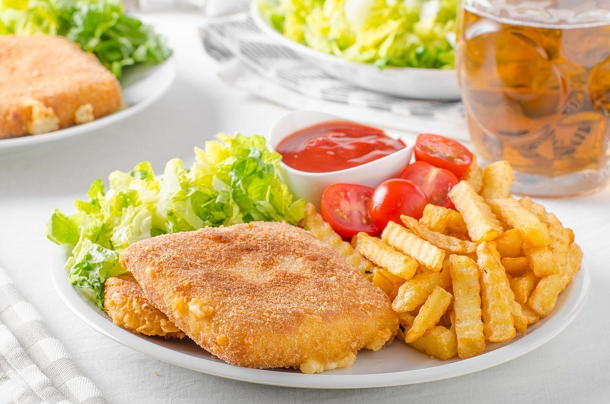

Fried cheese with french fries

Description
A czech classic, fried cheese with french fries, tatar and vegetables.
Ingredients
- sýr eidam (min. 40 % tuku) 4 plátky o tloušťce 1 cm
- Šunka 4 plátky
- Vejce 2 ks
- Hladká mouka
- Strouhanka z toustového chleba
Steps
-
Strouhanku smíchejte s polohrubou moukou v poměru 2 díly strouhanky a
1 díl mouky.
-
Sýr o tloušťce zhruba 1 cm rozpulte, dovnitř vložte šunku,
přitiskněte, obalte v mouce, vejci a směsi strouhanky s moukou. V
hlubší nádobě rozpalte olej s přepuštěným máslem. Teplota by měla být
udržovaná na 160 °C.
-
Obalený sýr smažte z obou stran dozlatova – opatrně obracejte, abyste
nepropíchli trojobal a sýr nevytékal.
Back to Top